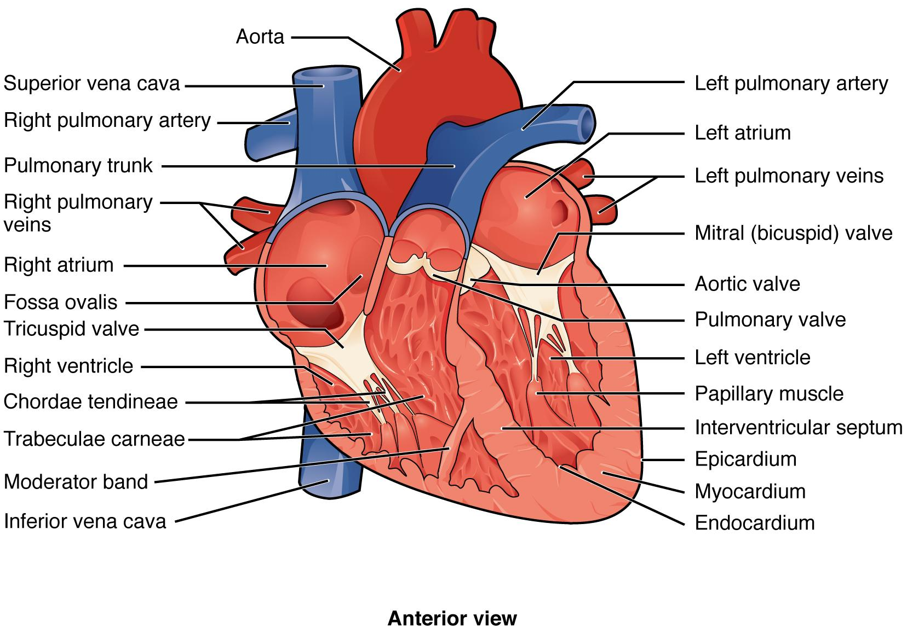

The heart is a muscular organ located in the thoracic
cavity. Its primary function is to pump blood through
the pulmonary and systemic circulations.

Figure 19.9 — Internal Structures of the Heart.
Source: OpenStax, Anatomy & Physiology 2e.
Licensed under CC BY-NC-SA 4.0.
Figure 19.9 — Internal Structures of the Heart.
Source: OpenStax, Anatomy & Physiology 2e.
View original source
|
CC BY-NC-SA 4.0 License
The four chambers
The heart contains four chambers. The two atria
receive blood, while the two ventricles pump blood
out of the heart.
Right atrium: Receives blood returning from the body.
Right ventricle: Pumps blood toward the lungs.
Left atrium: Receives blood returning from the lungs.
Left ventricle: Pumps blood into systemic circulation.
Key concept:
The right side of the heart sends blood to the lungs.
The left side sends blood to the rest of the body.
Blood Flow Through the Heart
Blood travels through the heart in a continuous cycle.
Follow the pathway below to understand how circulation works.
Right Side · Deoxygenated Blood
Body
↓
Superior & Inferior Vena Cava
↓
Right Atrium
↓
Tricuspid Valve
↓
Right Ventricle
↓
Pulmonary Valve
↓
Pulmonary Arteries
↓
Lungs
Left Side · Oxygenated Blood
Lungs
↓
Pulmonary Veins
↓
Left Atrium
↓
Mitral Valve
↓
Left Ventricle
↓
Aortic Valve
↓
Aorta
↓
Body
Why does the heart have valves?
Heart valves help maintain one-way blood flow
through the heart. They open to allow blood
to move forward and close to help prevent
backward flow.
Tricuspid valve: Between the right atrium and right ventricle.
Pulmonary valve: Between the right ventricle and pulmonary trunk.
Mitral valve: Between the left atrium and left ventricle.
Aortic valve: Between the left ventricle and aorta.
Blood vessels
Arteries: Carry blood away from the heart.
Veins: Carry blood toward the heart.
Capillaries: Allow exchange of gases, nutrients, and waste between blood and tissues.
Interactive Blood Flow Challenge
Follow the path blood takes through the heart.
Click the button to reveal each next step.
Start with blood returning from the body.
Knowledge Check
Test what you've learned about blood flow!
Question 1: Which chamber pumps blood to the lungs?
Question 2: Which blood vessels carry oxygen-rich blood from the lungs to the heart?
LEVEL 02 · INTERMEDIATE
Cardiac Function
The cardiac cycle
The cardiac cycle describes the events that occur
during one complete heartbeat. It includes
ventricular contraction (systole) and relaxation
(diastole).
Electrical conduction
Specialized cardiac cells generate and conduct
electrical signals that coordinate the heartbeat.
The sinoatrial node normally initiates each heartbeat.
Sinoatrial (SA) node
Atrioventricular (AV) node
Bundle of His
Right and left bundle branches
Purkinje fibers
LEVEL 03 · ADVANCED
Advanced Cardiovascular Physiology
Cardiac output
Cardiac output is the volume of blood pumped by
one ventricle per minute.
Blood pressure is influenced by cardiac output,
vascular resistance, blood volume, and regulatory
mechanisms involving the nervous and endocrine systems.
KNOWLEDGE CHECK
Test your knowledge
Which chamber pumps blood to the lungs?
Which blood vessels carry blood away from the heart?